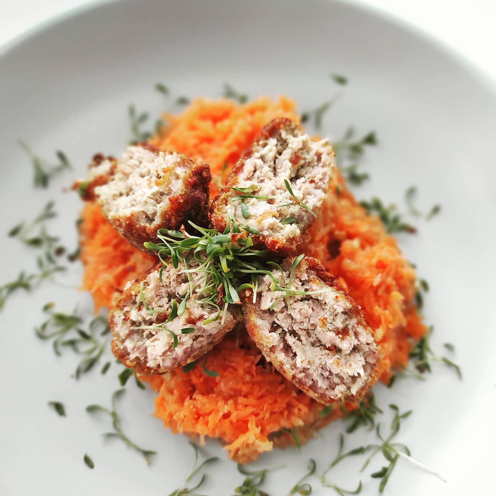

Žerucha podľa @simiiiiik — Normy Jedál
Zbožňuje tu niekto fašírky tak ako ja? Hlavne tie mamine so všetkým, ako sa patrí 🤗🥰😋
Na večeru som si k nim pripravila strúhaný šalát z mrkvy a jablka pokvapkaný citrónom.
#čerstvázelenina #fasirky #nedelnyobed #farbynataniery #zerucha #ľahkávečera